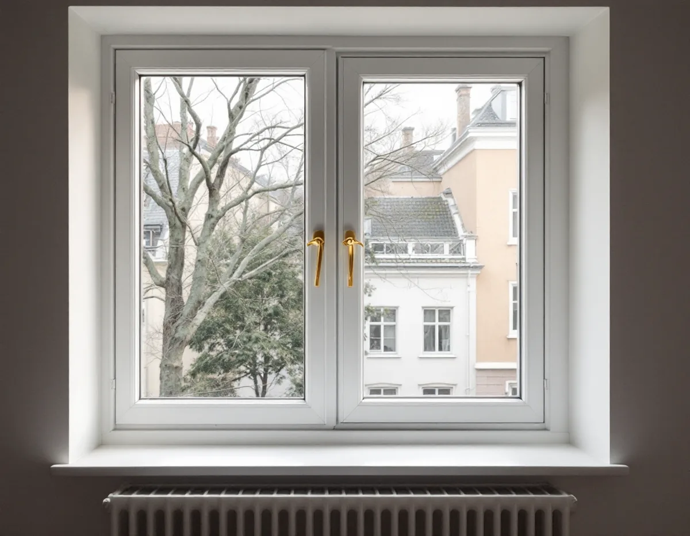
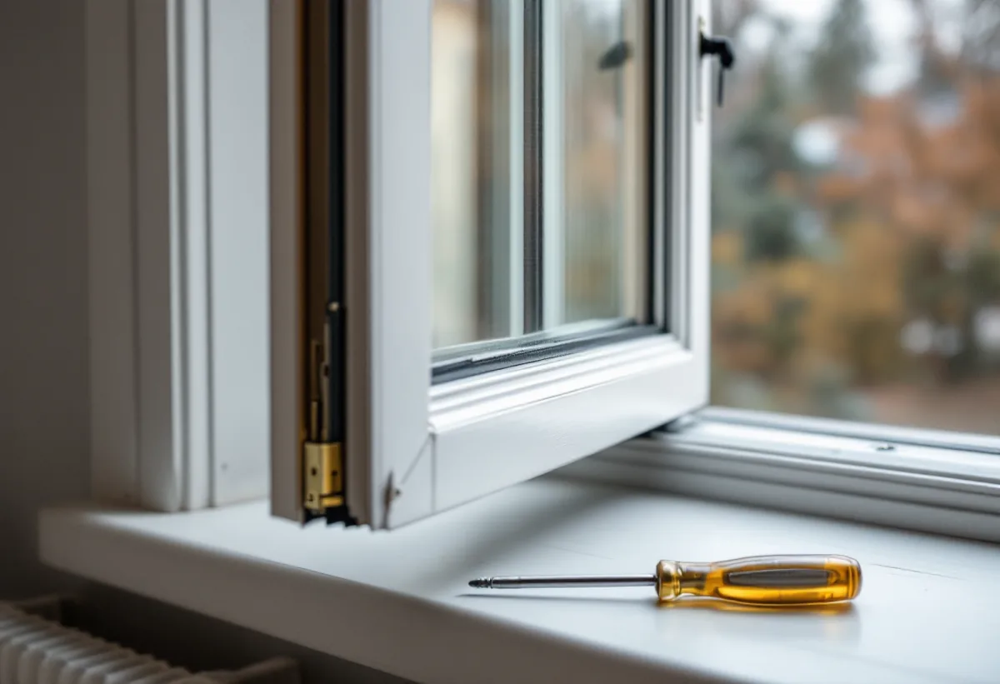

Stadgarna först
Vi går igenom vilka delar av fönstret stadgarna lägger på dig och vilka som är föreningens.
På Kungsholmen är de flesta bostäder bostadsrätter, och då är fönstren sällan bara en teknisk fråga – det gäller också vem som ansvarar för vilken del. Geal Entreprenad AB renoverar fönster i lägenheter på Kungsholmen: vi justerar bågar som kärvar, byter lister och glas i innerbågen och målar insidan, och vi går igenom gränsen mot föreningen innan arbetet börjar.

Enligt stadens områdesfakta fanns det 44 554 bostäder i Kungsholmens stadsdelsområde 2024, och 30 598 av dem var bostadsrätter. Bara 337 låg i småhus. Bebyggelsen spänner från den klassiska stenstaden, som översiktsplanen daterar till 1870–1930 och som bland annat breder ut sig över Kungsholmen, till de funktionalistiska stadsdelarna i Fredhäll och Kristineberg som började byggas omkring 1930.
Bostadsrättslagen säger att du som bostadsrättshavare på egen bekostnad ska hålla lägenheten i gott skick, om inte stadgarna bestämmer något annat. Föreningen ska hålla lägenheten, huset och marken i gott skick i den mån ansvaret inte vilar på dig. Fönstren nämns inte särskilt i lagen, så det är föreningens stadgar som drar gränsen, och den kan dras olika i olika föreningar. Läs därför stadgarna, och fråga gärna styrelsen, innan du beställer arbete på fönstren.

Skatteverkets regler för bostadsrätt följer samma gräns. Avdrag ges bara för arbete inne i bostaden, innanför tak, väggar och golv, och för åtgärder som du ansvarar för enligt stadgarna. För fönster godkänns arbete på insidan av befintliga fönster, till exempel att byta glaset i den inre bågen eller montera tätningslist. Att måla insidan av fönstren och att byta och reparera innerfönster och fönsterfoder finns också med.
Lika tydligt är vad som inte ger avdrag: att byta fönster eller gångjärn i fönster, att arbeta mellan bågarna eller på utsidan och att måla eller olja fönstrens utsida. Renoverar föreningen husets fönster har dess företrädare enligt bostadsrättslagen rätt att komma in i lägenheten när det behövs för arbete som föreningen svarar för, och föreningen ska se till att du inte drabbas av större olägenhet än nödvändigt.
Riksantikvarieämbetets skrift om fönster beskriver ett fönster från 1937 i ett smalhus i Uppsala, i ett område där alla hus byggdes på 1930-talet. Fönstret är kopplat och inåtgående, nästan kvadratiskt och saknar mittpost, och innerbågen är överfalsad med plats för en tätningslist. När fönstren i huset sågs över hade inget av dem rötskador, men många var svåra att öppna och stänga. Snickeriarbetet bestod i att justera upphängningsbeslagen och hyvla bågarna där de klämde, och alla tätningslister byttes mot gummilister.
Samma skrift påpekar att äldre kopplade bågar kan vara stora och tunga, sluta otätt och ha igengrodda kopplingsbeslag eller skevheter. Ibland behöver de nya handtag och stängningsbeslag för att bli lätta att hantera. Vi börjar därför med upphängningen: först när bågen hänger rätt är det meningsfullt att byta list.
Stockholms stad räknar bland annat nytt material eller ny kulör, ändrade profiler på karmar, bågar och spröjsar och en annan indelning eller upphängning som ändringar av fönster, och om en sådan ändring kräver bygglov beror på byggnaden. Staden uppmanar också den som planerar ett arbete att informera grannarna eller styrelsen. Att justera, täta och måla innerbågen i samma kulör finns inte med i stadens lista.
Vill du förbättra fönstret mer än en ny list ger, beskriver Boverkets energiguide hur den inre rutan kan bytas eller kompletteras med energiglas, till exempel med en tvåglaskassett på insidan. Glas i den inre bågen är ett av de arbeten som Skatteverket godkänner i en bostadsrätt. Hur insidan av fönster och element målas i en bostadsrätt tar vi upp under målare på Kungsholmen, och nya fönster under fönsterbyte.
Vi går igenom vilka delar av fönstret stadgarna lägger på dig och vilka som är föreningens.
Varje fönster öppnas och stängs, och vi ser hur bågarna hänger, sluter och var de klämmer.
Arbetet delas upp så att det syns vad som görs på insidan.
Beslagen ställs in och bågar som klämmer hyvlas så att de går lätt.
Ny tätningslist på innerbågen och vid behov nytt glas i den inre bågen.
Innerbågar och foder målas, och golv och möbler skyddas under tiden.
I en bostadsrätt ger fönsterarbete avdrag när det görs på insidan och gäller något du ansvarar för enligt stadgarna. Företaget behöver då bostadsrättsföreningens organisationsnummer och lägenhetsnumret, som vanligen har fyra siffror.
Avdraget är högst 30 procent av arbetskostnaden och högst 50 000 kr per person och år, eller 75 000 kr tillsammans med rutavdrag. Material och resor ingår inte, betalningen ska vara elektronisk och vi drar avdraget direkt på fakturan.
Antalet fönster, hur mycket justering och hyvling bågarna behöver, om glaset i innerbågen ska bytas och hur mycket som ska målas på insidan påverkar mest. Efter ett gratis platsbesök får du ett skriftligt kostnadsförslag.
Byta eller renovera fönster.
Fönsterbyte i Stockholm →Stambyte, stämmobeslut och 30-talshus.
Badrumsrenovering på Kungsholmen →Stegljud, golvval och styrelsens tillstånd.
Golvläggare på Kungsholmen →Slipa och lacka golvet i bostadsrätten.
Golvslipning på Kungsholmen →Funkislägenheter, stadgar och ROT i bostadsrätten.
Målare på Kungsholmen →Ny tapet på putsade lägenhetsväggar.
Tapetsering på Kungsholmen →Hela lägenheten från golv till tak.
Totalrenovering på Kungsholmen →